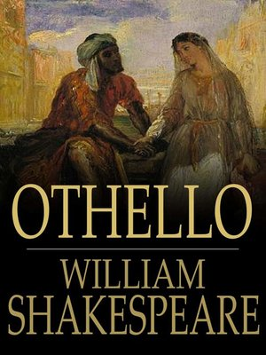

Karya William Shakespeare.
Tentang Othello
Othello adalah tragedi lima babak karya dramawan besar Inggris William Shakespeare. Judul lengkapnya adalah Othello, the Moor of Venice. Othello adalah salah satu karya tragedi terbesar Shakespeare, disamping Macbeth, King Lear, dan Hamlet. Shakespeare menulis Othello antara tahun 1602 dan 1604. Othello pertama kali dilakonkan pada tahun 1604 di Whitehall, London, di hadapan Raja James I. Buku Othello diterbitkan pada tahun 1622 dan versi revisinya muncul pada tahun 1623. Sumber Shakespeare dalam menulis Othello berasal dari Hecatommithi (One Hundred Tales, tahun sekitar 1565) karya seorang penulis Italia bernama Giambattista Giraldi (1504-1573), yang menulis dengan nama samaran Cinthio. Terjemahan dari beberapa cerita Cinthio dimasukkan ke dalam Palace of Pleasure (1566, 1567, 1575), yang dikumpulkan oleh penerjemah Inggris William Painter. Tapi Shakespeare mungkin telah membaca cerita tersebut di Italia atau Prancis.
Sinopsis Othello
Babak pertama berlatar belakang di Venesia dan babak-babak selanjutnya berlatarkan pelabuhan di pulau Siprus. Othello, seorang Moor (Afrika Utara) yang terhormat, menghabiskan hidupnya sebagai seorang prajurit dan menjadi seorang jenderal tentara yang mengabdi pada Republik Venesia, Italia. Ia menikahi Desdemona, seorang gadis cantik Venesia yang jauh lebih muda darinya. Ayah Desdemona, seorang senator bernama Venetian Brabantio, mengadu kepada Duke of Venice bahwa Othello telah mencuri putrinya. Tapi Othello tetap membenarkan tindakannya.
Segera setelah itu, ia diperintahkan oleh Siprus untuk melawan invasi Turki. Ia membawa serta Desdemona dan Cassio, seorang Florentine muda yang baru saja ia promosikan menjadi letnan, dan Iago, seorang tentara tua yang menjabat sebagai asisten Othello. Iago yang jahat memutuskan untuk menghancurkan Othello dengan mengatakan padanya bahwa Desdemona telah berselingkuh dengan Cassio. Iago tampaknya membenci Othello karena ia melangkahi promosi jabatannya dan karena menurutnya orang Moor itulah yang merayu istrinya.
Namun, sumber kebencian Iago pada Othello telah menjadi spekulasi dan kontroversi selama beberapa generasi. Menggunakan Cassio dan pemuda lain, Roderigo, sebagai pion dalam permainan, Iago meyakinkan Othello bahwa Desdemona telah selingkuh. Akhirnya, ia menyuruh istrinya, Emilia, pembantu Desdemona, untuk mencuri saputangan yang diberikan kepada Desdemona oleh Othello. Iago memastikan bahwa saputangan itu telah dimiliki Cassio dan bahwa Othello melihat Cassio melakukan itu.
Setelah termakan hasutan Iago itu, Othellopun membunuh Desdemona dengan cara mencekiknya di tempat tidur. Dalam adegan penutupan, Emilia membantu mengungkapkan bahwa Desdemona tidak bersalah, dan Iagopun membunuhnya. Ia juga membunuh Roderigo karena gagal membunuh Cassio. Tapi surat yang ditemukan pada tubuh Roderigo membuktikan bahwa Iagolah yang bersalah dan iapun akhirnya ditangkap.
Setelah Othello tahu bahwa ia telah ditipu, ia menusuk dirinya sendiri sampai mati. Ia menggambarkan dirinya sebagai “orang yang dicintai secara tidak bijaksana, tapi terlalu baik.” Othello adalah tragedi Shakespeare yang paling mudah dimainkan. Tempo adegannya cepat dan bahasa yang digunakan sederhana dan langsung. Othello berbeda dari sebagian besar tragedi Shakespeare lainnya karena tidak bercerita tentang masalah publik dan keluarga kerajaan. Sebaliknya, Othello adalah tragedi ketegangan pribadi, cinta, kebencian, dan kecemburuan.